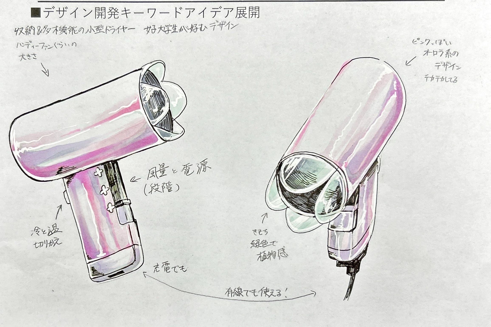
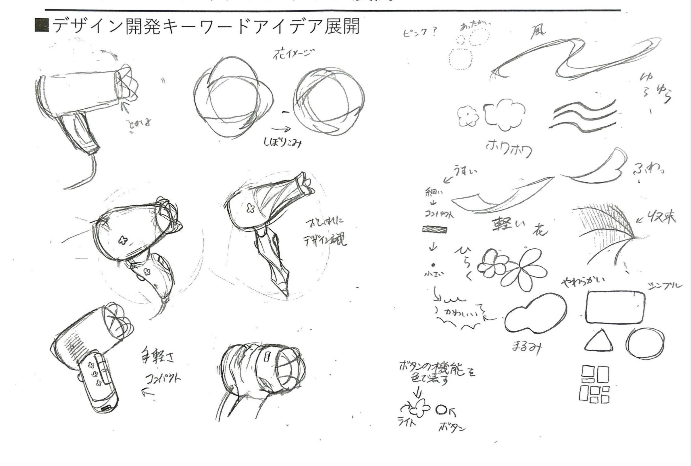
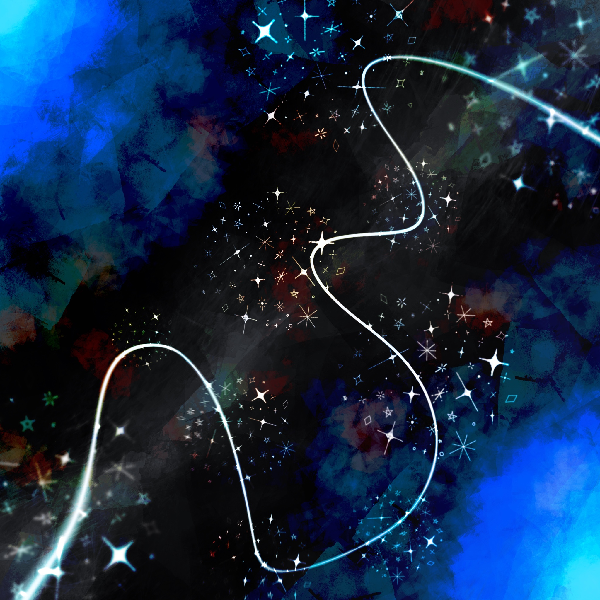
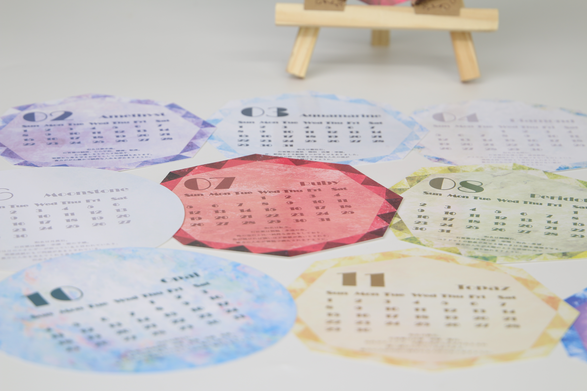
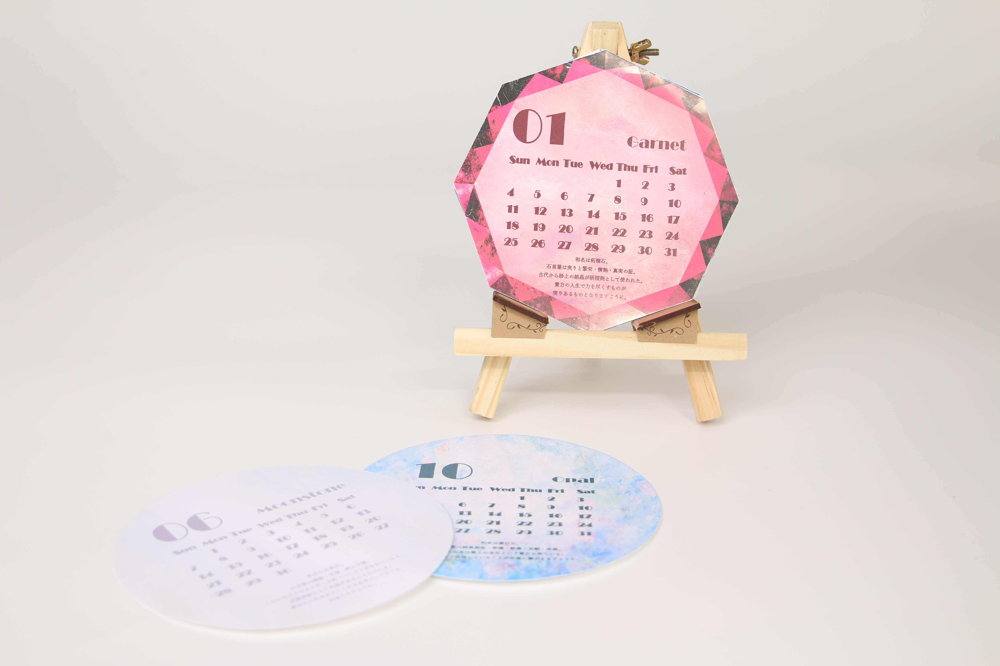
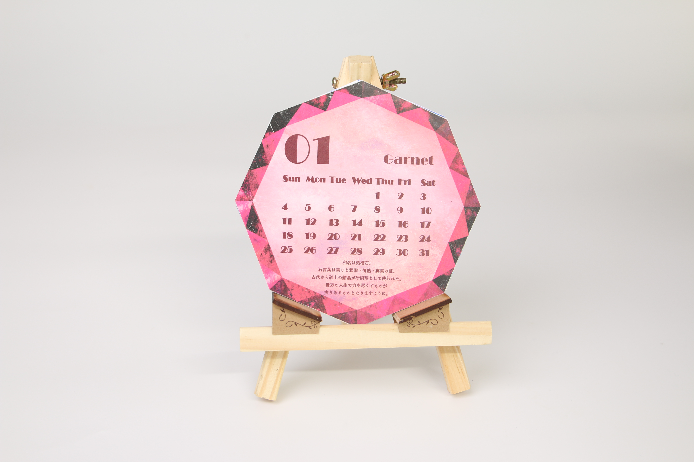

デザイン
ここでは私が制作したデザインをまとめ、公開しています。
ドライヤー考案
『女子大学生が使いたくなるようなドライヤー』というテーマを定めて、課題解決のプロセスを踏まえ考案しました。 花のモチーフや、オーロラ系のカラーなどを用いたり、コンパクトや、モードに関しての機能的面でも考え、考案しています。


ハンカチーフ制作
この作品は星で個人を表現し、集団とすることでコミュニティを描き、線でテーマである『繋がり』を表現しまた。 星は宇宙に多種多様な星が存在しており、それらが銀河や星座を形成している姿を見て、多様な人々とのコミュニティを表すモチーフに最適だと考えました。 人はみな、自身のうちに光り輝く個性を持っています。一人ひとりの個性が輝くことで、コミュニティが形成された際、天の川や銀河のようにさらに輝きを増してきれいになる、そんな多様性の世界になることを願って制作しました。



カレンダー制作
この作品は、誕生石をモチーフに制作しています。推しの誕生日や自身の誕生日、友人の誕生日の石にどんな意味が込められているのかを考え、楽しめるようなデザインとして制作しました。


